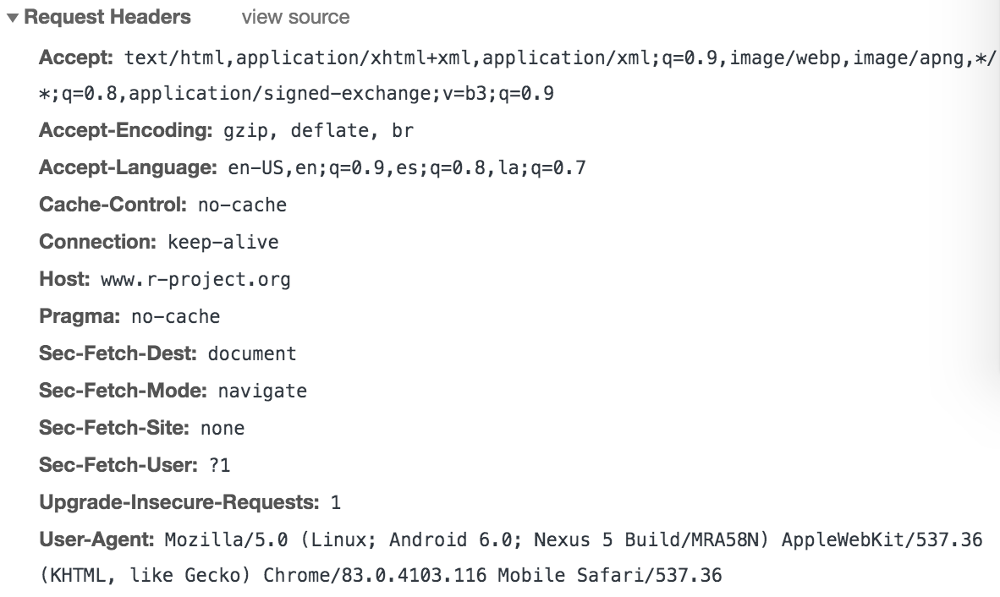

3 Basics of HTTP
In the preceding chapter you were given a high-level description about how the Web works. In this chapter we take the next step to give you a basic introduction to HTTP which is the protocol that servers and browsers use to communicate and exchange information on the Web.
3.1 What is HTTP?
HTTP is the acronym for Hypertext Transfer Protocol. Perhaps the two most important terms in this name are Protocol and Transfer.
According to the dictionary, a protocol is:
“A system of rules that explain the correct conduct and procedures to be followed in formal situations”
In turn, a transfer protocol is a communications protocol:
“A communications protocol is a system of digital rules for data exchange within or between computers.”
So, what is HTTP? Simply put, HTTP is the set of rules for transferring things such as text, images, sound, video and other multimedia files over the Web.
3.2 A quick introduction to HTTP
Whenever you surf the web, your browser sends HTTP request messages
the HTTP requests are sent to Web servers
web servers handle these requests by returning HTTP response messages
the messages contain the requested resource(s)
3.2.1 HTTP Example
Suppose we open the browser in order to visit R project’s homepage
https://www.r-project.orgAlthough we don’t see it, there’s is a client-server dialogue taking place, illustrated in the diagram below:
Using Chrome’s DevTools (developer tools), we can see the associated information related to the HTTP “conversation” between the client and the server. We provide the content of this dialogue in the following block:

Think of an HTTP request as a set of information sent to the server. When the server receives the request, it (the server) processes the information and provides a response back to the client.
When you visit a URL in your web browser, say R’s project website (https://www.r-project.org), an HTTP request is made and the response is rendered by the browser as the website you see. Although we don’t see the “dialogue” between client and server, it is possible to inspect this interaction using the development tools in a browser such as Chrome’s DevTools (like the screenshot above).

The above is a screen-capture in which we can see that the request is composed of a URL (R’s project website), and a request method (GET) which is what the browser employs to access a website.
3.2.2 HTTP Request
There are several components of an HTTP request (see figure below), but we will focus on the most relevant:
URL: the address or endpoint for the requestHTTP method or verb: a specific method invoked on the endpoint (
GET,POST,DELETE,PUT)Headers: additional data sent to the server, such as who is making the request and what type of response is expected
Body: data sent to the server outside of the headers, common for
POSTandPUTrequests

3.2.3 HTTP Response
The response headers include the HTTP status code that informs the client how the request was received. There are also other details about the content delivered by the server. In the above example accessing www.r-project.com, we can see the status code success 200, along with other details about the response content. Notice that the returned content is HTML. This HTML content is what the browser renders into a webpage.

3.3 Anatomy of an HTTP message
HTTP messages consist of 2 parts (separated by a blank line)
- A message header
- the first line in the header is the request/response line
- the rest of the lines are headers formed of
name:valuepairs
- An optional message body
The client (your browser) sends a request to the server:
GET / HTTP/1.1
User-Agent: curl/7.24.0 (x86_64-apple-darwin12.0) libcurl/7.24.0 OpenSSL/0.9.8y zlib/1.2.5
Host: r-project.org
Accept: */*- The first line is the request line which contains:
GET / HTTP/1.1 - The rest of the headers are just
name:valuepairs, e.g.Host: r-project.org
The server sends a response to the client:
HTTP/1.1 301 Moved Permanently
Date: Thu, 01 May 2014 16:54:43 GMT
Server: Apache/2.2.22 (Debian)
Location: http://www.r-project.org/
Vary: Accept-Encoding
Content-Length: 312
Content-Type: text/html; charset=iso-8859-1
<!DOCTYPE HTML PUBLIC "-//IETF//DTD HTML 2.0//EN">
<html>
...
</html>- The first line is the status line which contains:
GET / HTTP/1.1 - The next lines contain header values
- The body message appears after the blank line, in this case is the content of the HTML page
3.3.1 HTTP Methods
Here’s a table with HTTP methods, and their descriptions
| Method | Description |
|---|---|
GET |
retrieves whatever information is identified by the Request-URI |
POST |
request with data enclosed in the request body |
HEAD |
identical to GET except that the server MUST NOT return a message-body in the response |
PUT |
requests that the enclosed entity be stored under the supplied Request-URI |
DELETE |
requests that the origin server delete the resource identified by the Request-URI |
TRACE |
invokes a remote, application-layer loop-back of the request message |
CONNECT |
for use with a proxy that can dynamically switch to being a tunnel |
So far we’ve seen that:
The HTTP protocol is a standardized method for transferring data or documents over the Web
The clients’ requests and the servers’ responses are handled via the HTTP protocol
There are 2 types of HTTP messages: requests and responses
We don’t actually see HTTP messages but they are there behind the scenes